A onça-pintada ou jaguar (português europeu) (nome científico: Panthera onca), também conhecida como onça-preta (no caso dos indivíduos melânicos), é uma espécie de mamífero carnívoro da família dos felídeos (Felidae) encontrada nas Américas. É o terceiro maior felino do mundo, após o tigre e o leão, e o maior do continente americano. Apesar da semelhança com o leopardo (Panthera pardus), a onça-pintada é evolutivamente mais próxima do leão (Panthera leo). Ocorre desde o sul dos Estados Unidos até o norte da Argentina, mas está extinta em diversas partes dessa região atualmente. Nos Estados Unidos, por exemplo, está quase extinta desde o início do século XX, mas ainda ocorre em algumas áreas do Arizona, Novo México e Texas. É encontrada principalmente em ambientes de florestas tropicais, e geralmente não ocorre acima dos 1 200 m de altitude. A onça-pintada está fortemente associada à presença de água e é notável como um felino que gosta de nadar. wikipédia
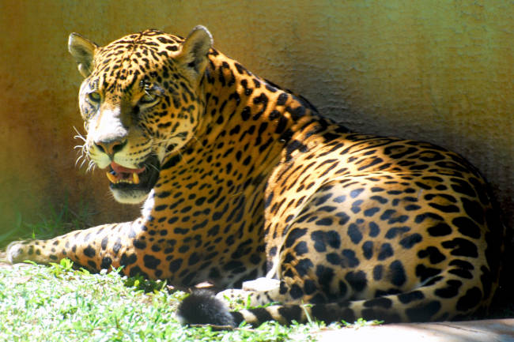
De 56 a 92 Kg podendo chegar a 150 Kg em alguns casos.
De 1,12 a 1,85 m (sem a cauda).
Carnívoro. 🍖
(CR)
O Lobo-Guará é considerado o maior canídeo sul-americano, esse animal costuma viver solitário e apresenta comportamento dócil e bastante tímido evitando contato com humanos. O principal risco de extinção do Lobo-Guará é a caça ilegal e a destruição do seu habitat natural. wikipédia
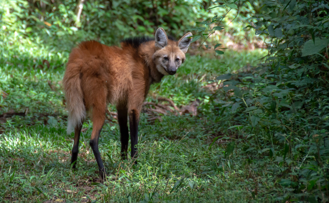
De 20 a 30 Kg.
De 0,95 a 1,15 m (sem a cauda).
Onívoro. 🍖🌿
(VU)
As Ariranhas são animais que vivem em grupos de 2 a 16 indivíduos, que geralmente são formados por um casal dominante e seus descendentes, são predadores ágeis que caçam durante o dia. O principal risco de extinção das ararinhas são a grande perda de seu habitat. wikipédia
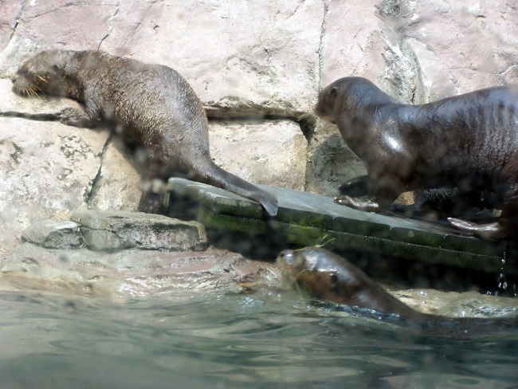
De 26 a 32 Kg.
De 170cm a 180cm.
Carnívoro. 🍖
(EN)
O Mico-Leão-Dourado costuma viver em grupos com 2-8 indivíduos, A formação e composição dos grupos são determinadas pela emigração de indivíduos do grupo de origem que se movimentam entre os grupos vizinhos até encontrar um(a) parceiro(a), constituir vínculo e formar um novo grupo. A destruição de habitat da espécie quase causou a extinção. wikipédia
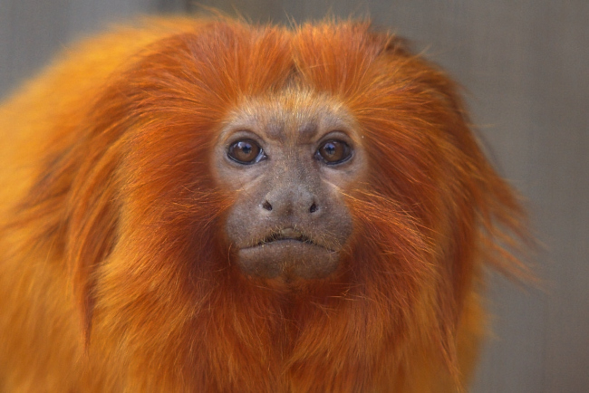
De 500g a 700g.
De 50cm a 58cm.
Onívoro. 🍖🌿
(EN)
O Tamanduá-Bandeira também chamado bandeira, bandurra, iurumi, jurumi, jurumim, tamanduá-açu, tamanduá-cavalo, papa-formigas-gigante e urso-formigueiro-gigante, é uma espécie de mamífero xenartro da família dos mirmecofagídeos, encontrado na América Central e na América do Sul. wikipédia
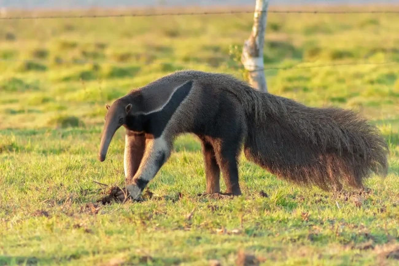
De 33 a 41 kg.
De 1,8 a 2,2 m.
insetívoros. 🐜
(EN)
O Morceguinho-do-cerrado é um morcego nectarívoro, tem dentes finos e agudos, e se alimenta também de insetos e frutas, mas prefere o néctar das flores. Na hora de sugar o néctar, o morcego adejam como os beija-flores. Suas flores mais visitadas são as unhas-de-vaca, embiriçu e jatobá. wikipédia
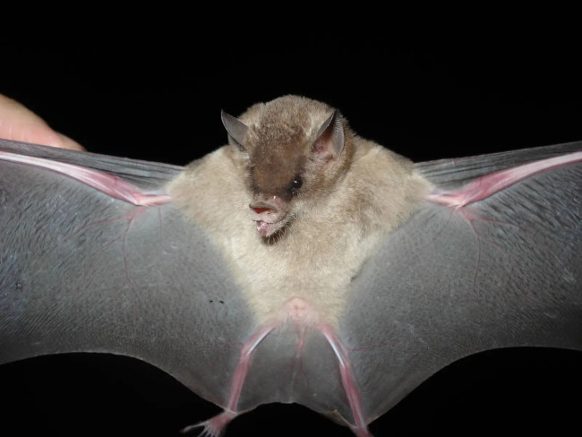
De 10 a 12 gramas.
De 45 a 65 milímetros.
nectarívoro. 🌻
(EN)
O Cuxiú-preto é um macaco do Novo Mundo da família Pitheciidae e gênero Chiropotes, endêmico do Brasil. É uma das cinco espécies de cuxiú. Possui tamanho médio, sendo principalmente primatas frugívoros, e se alimentam principalmente de sementes. wikipédia
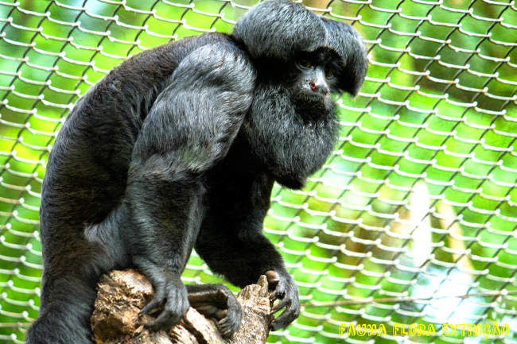
De 2kg a 4kg.
De 70 e 80 centímetros.
Herbívoro. 🌿
(CR)
A jacutinga também chamada jacuapeti, jacupará e peru-do-mato, é uma ave da família dos cracídeos que habita as florestas virgens das regiões Centro-Oeste e Sudeste do Brasil. Mede cerca de 75 cm, alimenta-se de frutos e bagas; sendo, até as décadas de 1950 e 1960, relativamente comum nesse habitat. wikipédia
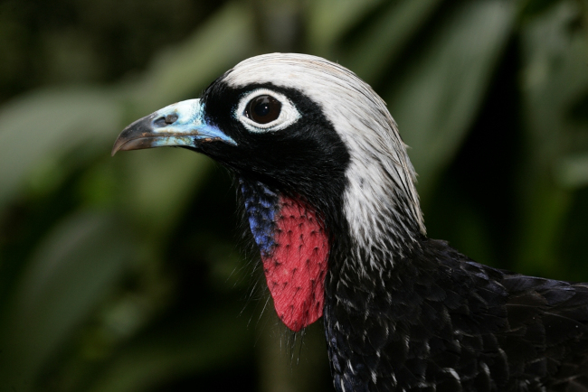
De 1,1 kg a 1,4 kg.
De 60 a 75cm.
Herbívoro. 🌿
(CR)
O Peixe-boi-da-amazônia é uma das criaturas mais fascinantes e emblemáticas da maior floresta tropical do mundo. Esse mamífero aquático, apesar de seu nome, não é um peixe, mas sim um parente distante dos elefantes. wikipédia
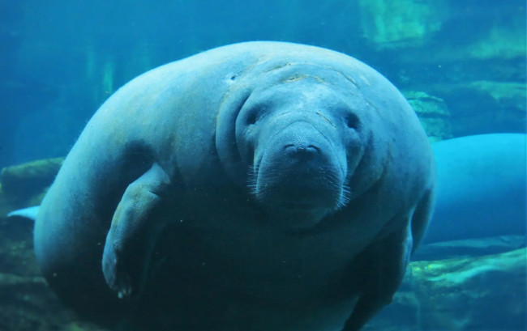
De 300 a 346 kg.
De 76 a 226cm.
Herbívoro. 🌿
(EN)
A Ararajuba também chamada de ararajuba, é uma ave psitaciforme endêmica do norte do Brasil, ameaçada de extinção. As aves chegam a medir até 35 centímetros de comprimento, possuindo uma plumagem amarelo-ouro com rêmiges verdes. wikipédia
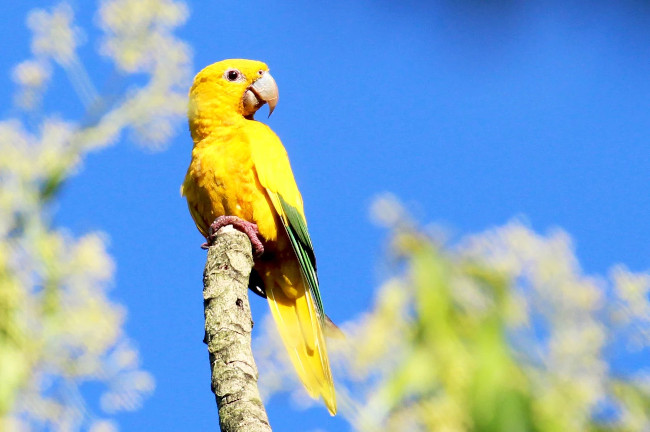
250g.
De 25 a 30 cm.
Herbívoro. 🌿
(VU)
O Javali ou javali-euroasiático, também conhecido como javardo, porco-bravo, porco-monteiro, porco-selvagem-euroasiático e porco-montês, é um animal artiodáctilo da família Suidae, do género Sus. Tem ampla distribuição geográfica, sendo nativo da Europa, Ásia, Ilhas Sonda e Norte da África. wikipédia
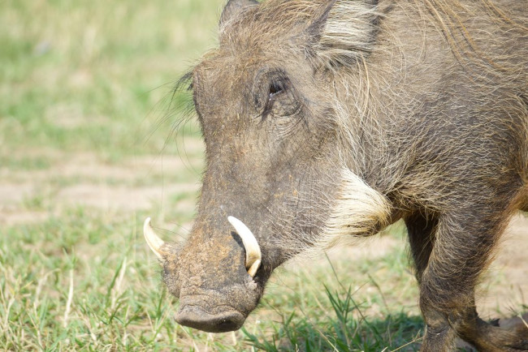
De 200 a 250kg.
2 metros (com a cauda).
Onívoro. 🍖🌿
Os Javalis é uma espécie invasora, que está com super população no Brasil, portanto é o unico animal com CAÇA LEGAL para controle de população.